Hier finden Sie die Methodenblätter der Schule. In den Lernsituationen wird auf diese Seite verlinkt, wenn eine Methode gebraucht wird. Jedes Blatt öffnet sich als PDF in einem neuen Tab und kann ausgedruckt werden.
Inhalte erfassen
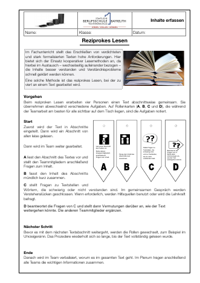
Reziprokes Lesen
Vier Personen erschließen einen Fachtext abschnittweise mit den Rollen A–D: vorlesen und fragen, zusammenfassen, Unklares klären, Fragen beantworten und vermuten, wie es weitergeht.
Wann: schwierige Fachtexte, Datenblätter, Normauszüge
Methodenblatt (PDF)Ein Erklärvideo zum Reziproken Lesen zeigt Ihnen die Lehrkraft im Unterricht.
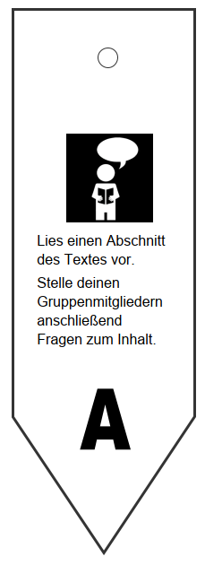
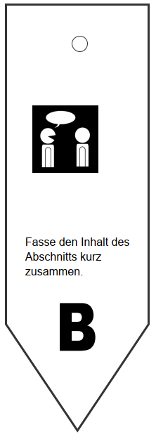
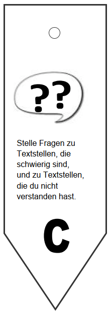
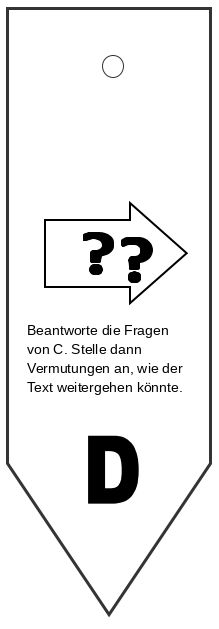
Ideen sammeln & ordnen
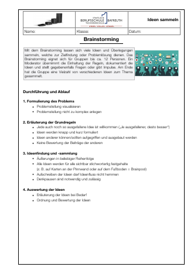
Brainstorming
Viele Ideen in kurzer Zeit sammeln – erst sammeln, dann bewerten. Eine Person moderiert.
Wann: Lösungsideen, Fehlerursachen, Einstieg in ein Thema
Methodenblatt (PDF)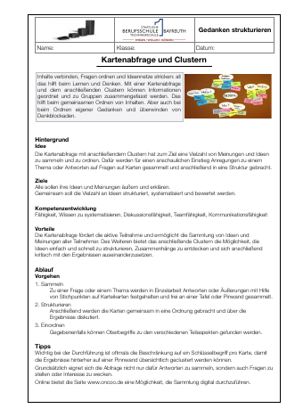
Kartenabfrage und Clustern
Gedanken auf Karten schreiben, gemeinsam ordnen und zu Gruppen zusammenfassen.
Wann: Vorwissen sammeln, Anforderungen ordnen
Methodenblatt (PDF)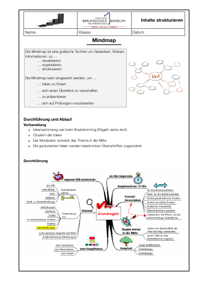
Mindmap
Wissen grafisch um einen Kernbegriff anordnen – Hauptäste, Unteräste, Stichworte.
Wann: Thema strukturieren, Wiederholung vor dem Leistungsnachweis
Methodenblatt (PDF)Darstellen & präsentieren
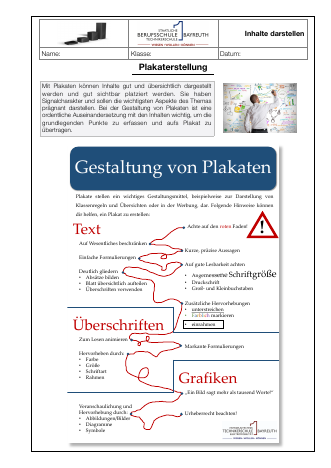
Plakaterstellung
Die wichtigsten Aspekte eines Themas knapp und gut lesbar auf ein Plakat bringen.
Wann: Gruppenpuzzle, Galerierundgang
Methodenblatt (PDF)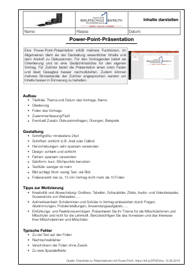
Präsentation mit PowerPoint
Folien als roter Faden für Zuhörende und Gedächtnisstütze – mit Tipps gegen typische Fehler.
Wann: Projektergebnisse, technische Stellungnahme
Methodenblatt (PDF)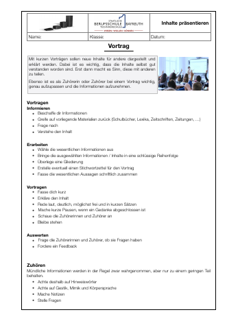
Vortrag
Neue Inhalte kurz und verständlich erklären – und als Zuhörer gezielt mitschreiben.
Wann: Expertenrunde, Kurzvortrag, Fachgespräch
Methodenblatt (PDF)Zusammenarbeiten & reflektieren
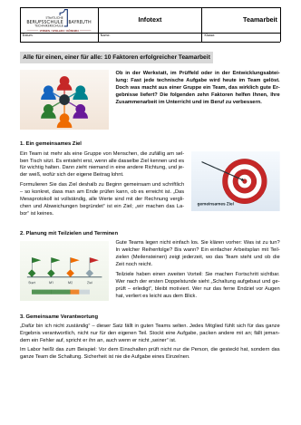
Teamarbeit
Zehn Faktoren erfolgreicher Teamarbeit – vom gemeinsamen Ziel über klare Rollen bis zum Feedback.
Wann: vor Projekten und Laborpraktika
Infotext (PDF)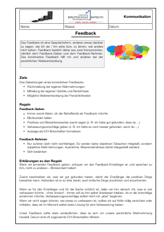
Feedback
Rückmeldung konstruktiv geben und annehmen – Regeln für beide Seiten.
Wann: nach Präsentationen, Galerierundgang, Teamarbeit
Methodenblatt (PDF)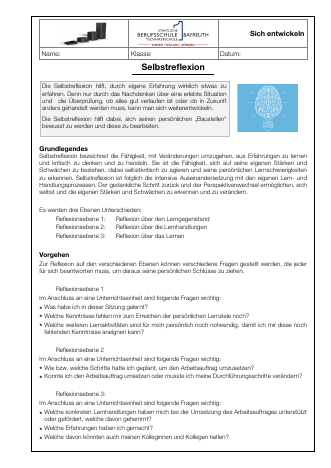
Selbstreflexion
Über die eigene Arbeit nachdenken: Was lief gut, was mache ich beim nächsten Mal anders?
Wann: Abschluss einer Lernsituation, Punktmatrix
Methodenblatt (PDF)